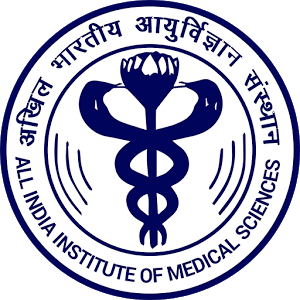
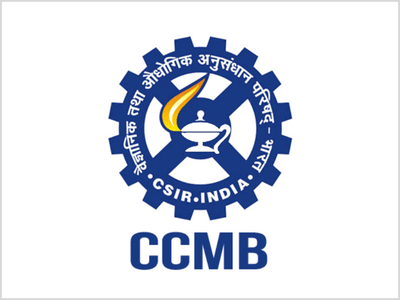
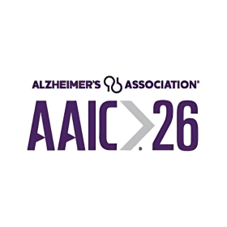
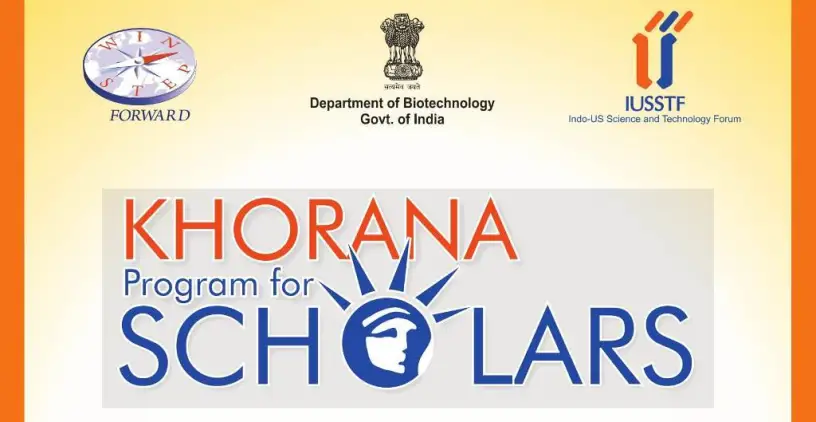
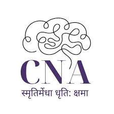

Amith Paruchuri
Final year medical student at AIIMS Delhi.
My relationship with bioinformatics began with resentment, not fascination. Genes felt like a kind of quiet tyranny, predetermining everything from skin color to height to disease risk, long before a person had any say in the matter. That determinism unsettled me.
Slowly, that aversion turned into fascination once I began actually working with genetic data and realized genes were never meant to be read in isolation to begin with. Disease reveals itself differently across modalities: transcriptomic activity, tissue architecture, imaging. It was this realization that pulled me toward multimodal data fusion as the problem I actually wanted to spend my career on.
I am a final year medical student at AIIMS New Delhi, India's top medical college, which I joined after securing Rank 43 among over 20 lakh candidates in NEET 2021 on a full scholarship. I am a Khorana Scholar, a distinction awarded to ten medical students across India each year, and spent a summer at the MIND Data Science Lab at Harvard Medical School studying astrocyte transcriptomic signatures in Alzheimer's disease and tauopathies using single-cell RNA sequencing.
Since then, my work has spanned computational pathology, genomics, proteomics, and imaging, all oriented around the same question: how do we combine these fragmented biological signals into models that actually reflect how disease behaves in a real patient. I co-founded Aeternix alongside this research, working to solve the same fragmentation problem at the level of hospital data infrastructure in India.
Education

Final-year medical student, currently completing the compulsory rotating internship (May 2026 – May 2027): Internal Medicine (26w), Surgery (22w), Community Medicine (13w), Obstetrics & Gynaecology (9w), Paediatrics (9w), Psychiatry (9w), Ophthalmology (6w), Anaesthesiology (4w), Dermatology (3w), Emergency Medicine (3w).
Admitted via NEET 2021, All India Rank 43 among over 20 lakh (2 million) candidates, on a full scholarship covering the MBBS programme at India's top-ranked medical college.

8th through 12th grade.
Research Experience
Advised by Dr. Sudeshna Das. Determined the astrocyte transcriptomic signature and astrocyte-neuron interaction in tauopathies using single-cell RNA analysis, delivered as an oral presentation at AAIC 2026. Gained expertise in Seurat, clusterProfiler, CellChat, NicheNet, and Reactome in R.
Named after Nobel Laureate Har Gobind Khorana, the Khorana Scholarship selects only 10 medical students across India each year.
Advised by Dr. Anant Madabhushi. Deciphered the immune architecture and role of tumor-infiltrating lymphocytes (TILs) as a survival biomarker in diffuse large B-cell lymphoma using deep learning, presented as a platform presentation at USCAP 2026.
Also studied concordance between brain and retinal biological ages using multimodal imaging, presented as a poster at AAIC 2026.
Selected for the Cambridge Centre for AI in Medicine (CCAIM) summer school run by the van der Schaar Lab. Covered AutoML, ML fundamentals, predictive digital twins, medical imaging AI, AI governance, ML interpretability, protein language models for bacterial evolution prediction, AI-driven precision dosing, and foundation models in intensive care.
Selected for the Swiss Oncology Summer School, a program focused on computational and translational oncology, bringing together clinical and quantitative approaches to cancer research.

Advised by Dr. Sandeep M. Eswarappa. Studied translational readthrough in the DMD gene as a therapeutic strategy for Duchenne muscular dystrophy. Gained hands-on expertise in DNA/RNA extraction, PCR, agarose gel electrophoresis, heat-shock transformation, lipofectamine-based transfection, and Western blotting.

Selected for the Medical Student Research Training Programme (MedSRT 4.0), one of 30 medical students nationwide, for hands-on training in molecular biology and genomic diagnostics.
Technical background
Research Projects
A 1D residual neural network trained on normal ECGs from PTB-XL (n=21,837) predicts chronological age from raw 12-lead waveforms. Age-adjusted gap analysis showed significantly elevated gaps in conduction disorders, ST/T-wave changes, and myocardial infarction. Females showed consistently larger gaps than males. V2 and aVL lead skewness emerged as the dominant waveform correlates, outperforming amplitude-based features.

RNA-seq from 216 liver biopsies (control, NAFL, NASH stratified F0–F4) identified a 563-gene fibroinflammatory progression signature via voom-limma. GSEA showed enrichment of EMT, TNF/NF-κB, and IL-6/STAT3 pathways with suppression of oxidative phosphorylation. STRING network analysis identified SPP1 (osteopontin) as the dominant hub gene, with betweenness 476, more than double the next node, rising progressively with fibrosis stage (FDR 2.9e-9).

Independent aging clocks were derived from retinal fundus imaging using pretrained foundation models and from structural brain imaging features. Residualized modeling, interaction analysis, and spline-based nonlinear regression tested whether age-gap deviations converge or diverge across the lifespan, demonstrating how multimodal imaging can capture shared systemic aging biology.

Single-nucleus RNA sequencing was used to identify shared and disease-specific astrocyte states across Alzheimer's disease and primary tauopathies. Clustering and differential proportion analysis revealed distinct astrocyte phenotypes enriched in inflammatory, stress signaling, and homeostatic pathways. Spatial transcriptomic mapping localized reactive phenotypes to disease-relevant brain regions.

Tumor and cellular compartments were segmented in DLBCL whole-slide images using deep learning, and a transition zone band was created around tumor margins. Spatial infiltration patterns were modeled as continuous curves, with slope-based features extracted to capture tumor–immune topology not visible through bulk immune density measures.

A transcriptome-derived genomic risk score was developed to capture immune regulatory and leukocyte differentiation programs beyond traditional cytogenetic risk stratification. Survival modeling and LASSO regression derived the gene signature, with differential expression and pathway enrichment characterizing the immune signaling landscape of adverse prognosis.

Standard targeted genomic panels leave a large fraction of variants unclassified in renal cell carcinoma, a critical gap in populations underrepresented in global databases. This cross-sectional study uses whole-exome sequencing in histologically confirmed metastatic RCC patients enrolled at AIIMS New Delhi. Variants in RCC susceptibility and RCC-related genes are classified per ACMG guidelines, with VUS subsequently re-evaluated against IndiGenomes, an indigenous Indian population frequency database, to assess reclassification potential. The study aims to establish a VUS-specific genomic reference for Indian RCC patients and explore the clinical significance of previously uncharacterized variants.

Mucosal transcriptomic landscapes in coeliac disease were investigated via differential gene expression and immune deconvolution. An immune activation index was derived to quantify mucosal immune state beyond histology. Pathway enrichment highlighted inflammatory signaling, antigen presentation, and lymphoid infiltration correlating with disease activity.

Transfer learning using MobileNet was applied to structural MRI to classify stages of dementia. Grad-CAM visualization confirmed spatial consistency of model attention with disease-relevant anatomical regions.

EEG signals were converted into spectrogram representations and classified using deep learning to develop an objective screening tool for schizophrenia, suited for low-resource clinical settings.

RGB crops around cell coordinates were generated and fused with SAM-derived segmentation masks to train a ResNet classifier for mitotic figure detection, a critical prognostic marker across multiple tumor types.

Vision Transformer features were extracted from multi-slice prostate MRI scans and aggregated at case level to predict cancer grade using deep learning.
Awards & Honors

Awarded a travel grant to present research on transcriptomic heterogeneity of astrocytes in tauopathies at the Alzheimer's Association International Conference (AAIC) 2026, London.

Selected as a recipient of the Khorana Scholarship 2024. Named in tribute to Dr. Har Gobind Khorana, Nobel Laureate in 1968 for his pioneering work at the interface of chemistry and biology, the program fosters Indo-U.S. scientific collaboration by funding cutting-edge research at Harvard Medical School alongside leading mentors advancing the boundaries of science.

Awarded ₹1,50,000 under the UGM program for a project measuring BNP (Brain Natriuretic Peptide) levels in infants with Transposition of Great Arteries (TGA).